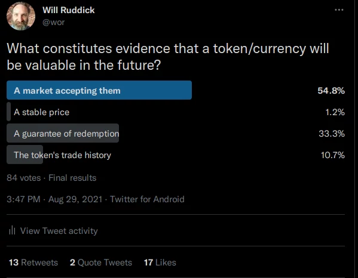

Bad Bus Tickets
There is a bus that goes all the way from Mombasa to Nairobi and a ticket for a single seat costs around 3000 Kenyan Shillings. These tickets are vouchers, with a guaranteed redemption for a bus seat.
The bus company is offering a simple service and asking for payment with a simple voucher. If the bus company issues more tickets than there are seats – people get pretty upset, they demand their money back and so on.
Loads of questions coming up these days around the themes of open source, free software, blockchain and growth. Below are a list of recent questions and my take on them.

#Taking a Bus Down the Crypto Rabbit Hole#
But what if instead of guaranteeing a bus ride - the bus company could convince people that these extra bus tickets will be valuable someday in the future? Like you will probably be able to get a bus ride in the future and they will also be used to buy stories from people who took the bus. Oh and you can use these vouchers to offset your carbon footprint.
Then the bus company prints millions of these vouchers and gives them to an elite in-group of directors and investors. Some of these tickets end up in the hands of exchanges/scalpers/money changers who will charge people to convert their tickets to cash and cash to tickets. These money changers end up being a large secondary market. (The Primary market being the Bus Company’s shaky guarantees).
If the Bus Company and/or the people they gave the millions of tickets to, pump/manipulate/induce-FOMO in these secondary markets to get the prices higher, they can sell off their tickets and become rich.
This sounds like a fraud, walks like a fraud and smells like a fraud.
What would a good ticket be? A simple voucher with a guaranteed redemption for a quality bus ride.
Just to drive this analogy home, let’s say instead of a bus company you have a group of people running servers and they have tickets (they call gas tokens) for you to use their network of servers.
They issue millions of these tokens to themselves and early investors, knowing full well that if all these tokens came back to them their services would get slower and slower. So they charge more and more of these tokens for their services and promote these tokens on secondary markets. Once the token prices are high the early investors cash out, taking people’s money and leaving them with tokens for a network that is unnecessarily slow.
And this is not the worst story. Beyond gas tokens, groups also make tokens that aren’t redeemable for anything with shady promises about some future value.
From the perspective of a buyer who knows nothing about crypto or the groups / companies promoting them.
Ask the questions: > “Are there any guarantees behind these tokens?” > & “Who regulates that the issuers must not break their guarantees?”
If you are not-comfortable buying stocks on a stock market – knowing that there is some marginal regulation to companies listed there. Why would you be buying or accepting tokens.
#Getting off the Bus!#
Voucher issuers should guarantee redemption of their vouchers – and there should be legal repercussions for the failure to do so. The bus company shouldn’t issue more tickets than they have seats on the bus and if they do you should get your money back and report them to authorities.
Ledger services (blockchains) can/could also ensure (deterministically/algorithmically) that they don’t mint more tokens than they can redeem with quality (secure and timely blocktimes) processing. For instance a blockchain could ensure that their outstanding tokens can all be redeemed for transaction validation with a 2 second block time.
A common term for Vouchers in the blockchain space is: Utility tokens which are said to offer the right to a service or product. But what if that product never comes to be, or they’ve grossly over issued or keep issuing more and more tokens and reduce the quality/timeliness of their services?
The claim is that Utility tokens are not securities and don’t need to be considered investments – but what if they keep being issued (minted) and their actual utility doesn’t exist or is reduced more and more over time ... While being bought and sold on secondary markets ... these are simply Bad Bus Tickets / Risky Investments and prone to, if not actual, fraud.
Community groups that want to create a community currency should take the same medicine. If that currency is created on a blockchain ledger or not – We’ve found it extremely important that the currency is made up of vouchers with an enforceable guarantee to redeem them for goods or services from the issuers. There should be no question as to what you can do with a Community Inclusion Currency - they are simply vouchers with guaranteed redemption for the goods or services of the issuing community group.
I imagine the world full of these vouchers, some of which will act as circulating currencies and some will simply be one-use vouchers. In building toward this world we must have some clear standards and ensure that communities issuing these vouchers are capable of redeeming them and that local authorities are able to mediate disputes. Not having these same standards with the tokens we use for the ledgers (blockchains) is a horrible hypocrisy.
As a humanitarian organization working with vulnerable populations – we get bombarded regularly by the crypto world with offers of shady tokens with no guarantees – because they want us to give them out to ‘help’ people – Sadly the road to hell is paved with good intentions. In the end we are in danger of becoming a tool for these shady tokens to legitimate and promote themselves and even lock-in vulnerable populations to their technology.
We find a lot of use and promise in secure decentralized ledgers - eventually we hope to help communities and humanitarian organizations develop their own simple ledger systems with simple vouchers for ledger services (rather than inflationary gas tokens). In the meantime we’ve moved to BloxBerg.org – because they don’t sell or promote their gas tokens as shady utility/investments that enrich an elite group of token holders (validation nodes).
... Note: To complicate the matter there are perfectly valid tokens that are not redeemable but have some intrinsic value or information (aka NFTs). These are like receipts, or pictures or other types of data that can be encoded onto a token. When supporting a community group you should be able to get a receipt (certificate) that shows exactly what you supported. These NFTs can be resold on other markets and so on, but because they are unique they don’t have quite the same ethical problem.